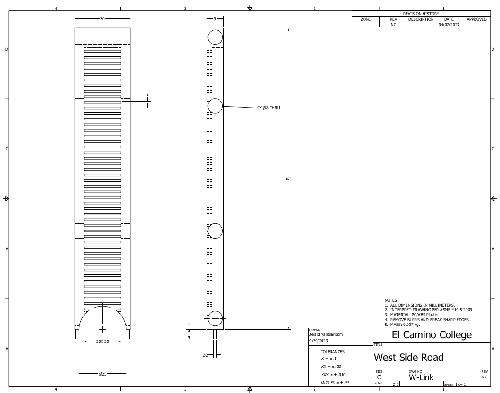

This is Edgar Tejada's CAD portfolio. All works published here are released under the CC BY 3.0 DEED unless otherwise noted.
This side part is printed with 25% infill with a hexagonal infill pattern. This was printed one, long and flat side down out of ABS.
